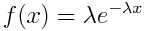
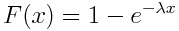
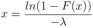

Calculate > Probability Distributions > Exponential
This utility computes the probability density, cumulative
probability, and inverse cumulative probability of the exponential
distribution.
The exponential probability density function, where λ > 0 is
the rate parameter, is defined as:

The cumulative and inverse cumulative
probability distribution function is defined as:


Distribution Parameters:
- Specify the rate parameter of the distribution.
Compute:
- Select the desired type of computation.
Input(s):
- If the input data is in a column in the current Datasheet,
select the Column radio button and the column name
in the drop-down menu.
- In the input data is a single constant, select
the Constant radio button and enter the input value
in the provided text box.
Store Results in: (optional)
- Computed results can be stored in a column of the current
Datasheet. To store results in a column, enter the column name
or variable name in the provided text box.